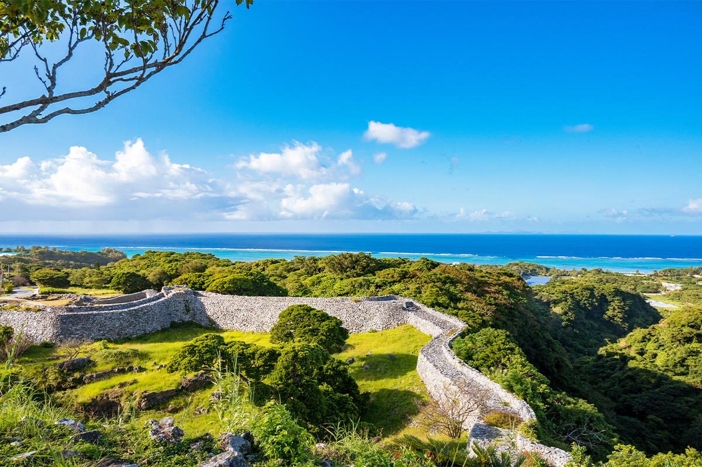
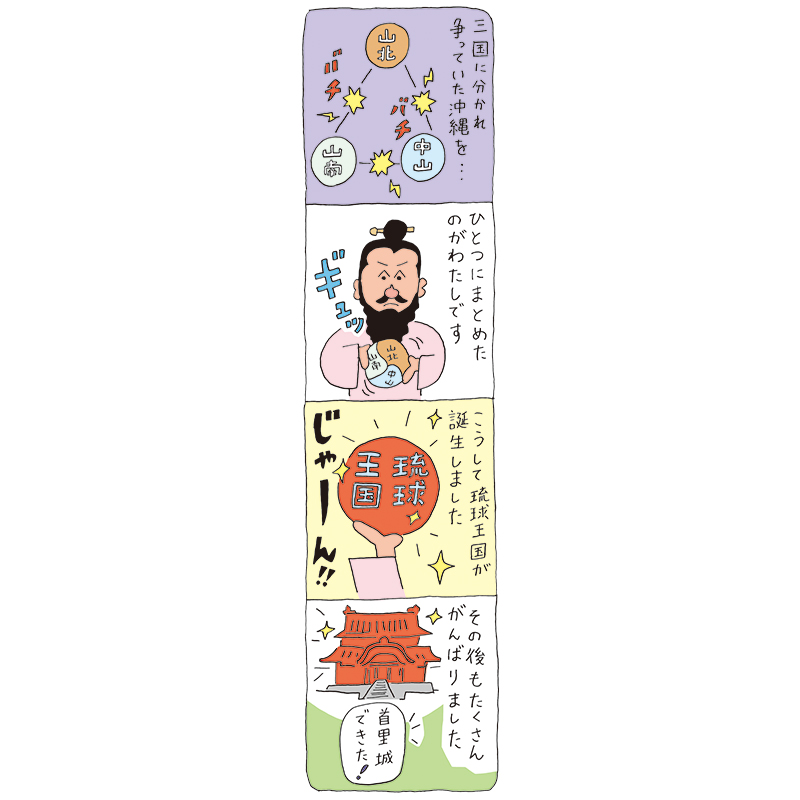
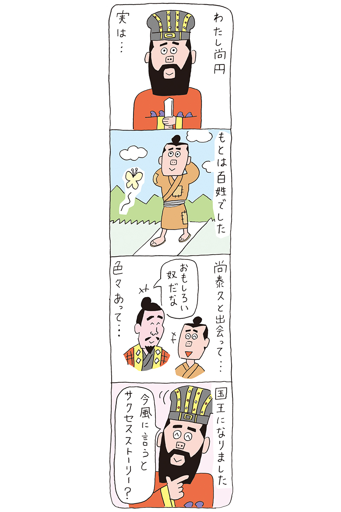
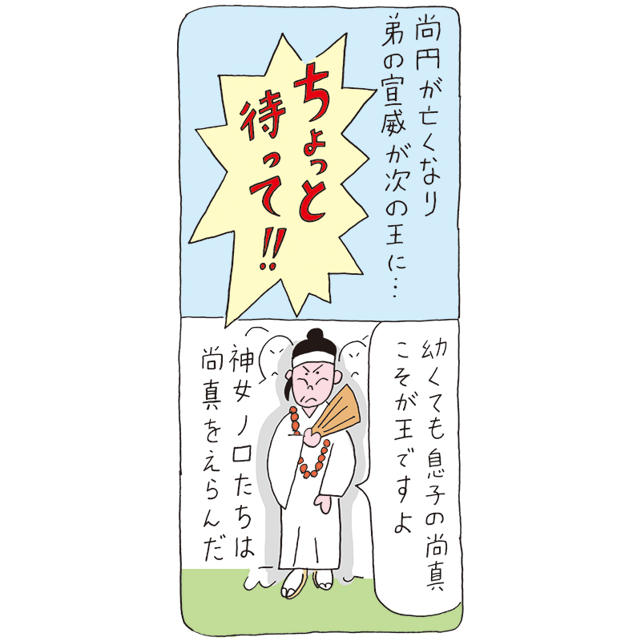
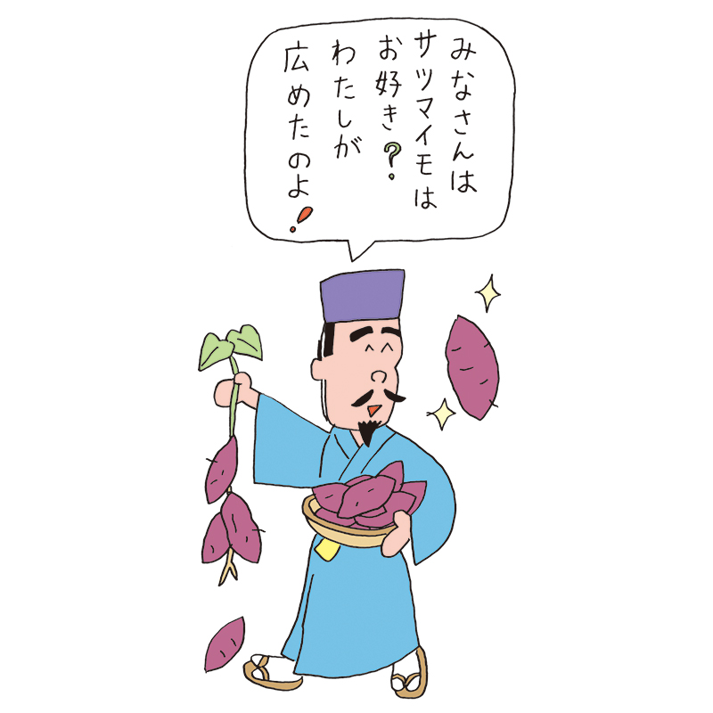
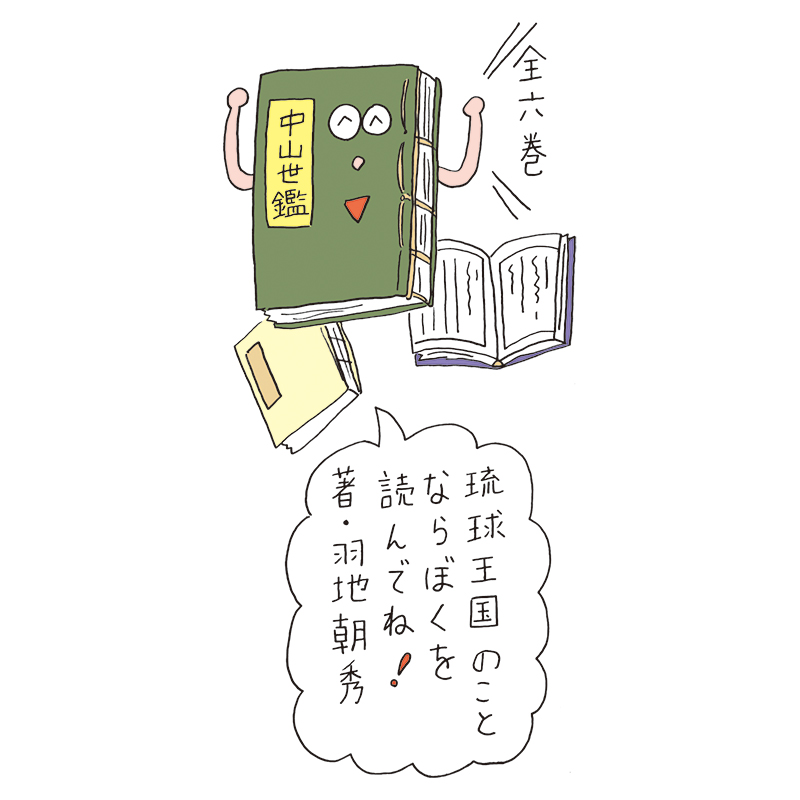
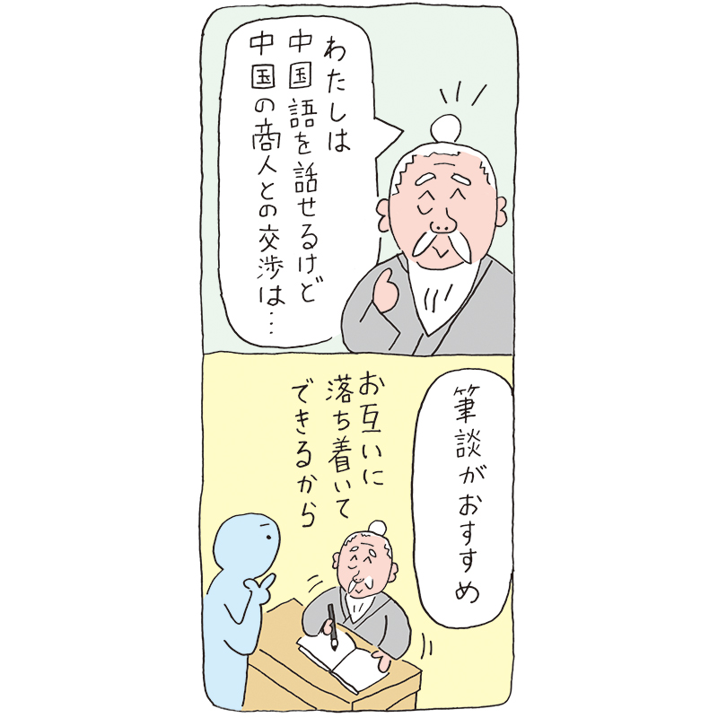

Префектура Окинава · королевство Рюкю · история
Шесть человек, которые создали королевство Рюкю: короли, реформаторы и дипломат

Королевство Рюкю просуществовало около 450 лет, примерно с XV века до эпохи Мэйдзи. У его истории есть свои герои: тот, кто заложил основы государства, и те, кто круто менял его судьбу. Знакомим с шестью из них.
Династии
Два дома Сё
Королевством правили две династии, и обе носили фамилию Сё. Первая династия Сё появилась после объединения острова Окинава: первым королём стал отец Сё Хаси, человека, который это объединение совершил. Династия сменила семь королей и продержалась 63 года.
Вторая династия Сё пришла к власти после смерти седьмого короля первой династии, Сё Току, в результате переворота. Её основал Сё Эн, и за 410 лет на троне сменились 19 королей. Именно при ней королевство пережило свой золотой век. Последним королём Рюкю стал Сё Тай.
В 2022 году, к 50-летию возвращения Окинавы Японии, в Токийском национальном музее прошла большая выставка «Рюкю», которая затем переехала в Национальный музей Кюсю. Ниже рассказываем о шести людях, чьи имена на Окинаве помнят до сих пор, и о местах, где можно увидеть следы их жизни.
Объединитель
Король Сё Хаси
В те времена остров Окинава был разделён на три государства: Самбоку на севере, Тюдзан в центре и Саннан на юге. Хаси родился в крепости Сасики на юге острова. В 21 год отец передал ему главенство в роду, и Хаси стал адзи, правителем округи Сасики. «Кюё», официальная хроника королевства, описывает его так: «Хаси был смел духом, высок помыслами, и талант его превосходил всех в мире».

В 1406 году Хаси сверг правителя Тюдзана. Местные адзи, по преданию, встретили молодого и умного победителя тирана с радостью. Хаси посадил на трон Тюдзана своего отца, Сё Сисё, а потом покорил и правителей Самбоку и Саннана. Так появилось первое единое государство на Окинаве, королевство Рюкю.
В 1422 году, после смерти отца, Хаси стал вторым королём. Столицей он сделал Сюри и взялся за строительство замка и порта. Когда построили первый замок Сюри, точно неизвестно, но считается, что при Хаси его вместе со всей округой обустроили по-настоящему.
Порт Хаси устроил в бухте Наха. От Сюри её отделяет море, зато здесь глубоко и могут заходить большие суда. Через порт Наха пошла посредническая торговля с Китаем, Японией, Юго-Восточной Азией и Кореей, и государство на ней разбогатело.
Хаси назначил министром Кайки, присланного из минского Китая, ввёл административные округа магири (примерно как нынешние города и сёла), проложил дороги из провинции в Сюри и устроил почтовую связь на скорых лошадях. Дальновидность и широкий взгляд на мир помогли ему заложить основы королевства.
Чудо карьеры
Король Сё Эн
По «Кюё», Канамару в 20 лет потерял родителей. После ссоры с односельчанами из-за воды для рисовых полей он в 24 года вместе с женой и младшим братом покинул остров и перебрался в Кунигами на севере острова Окинава.

В 1441 году Канамару жил крестьянином в Сюри, и тут его жизнь переменилась. Он встретил принца Гоэку, будущего шестого короля первой династии Сё Тайкю, понравился ему и поступил на службу. Трудолюбие помогло ему выдвинуться: к 38 годам Канамару получил жёлтую шапку высокого чиновника, а когда Тайкю взошёл на трон, стал его любимцем и дослужился до главы внешней торговли. Со следующим королём, Сё Току, он не сошёлся во взглядах. Устав от своевольного правителя, в 1468 году Канамару оставил службу и уехал в свои владения в Утима.
Уже на следующий год всё снова переменилось. Молодой Сё Току внезапно умер, и недовольные его правлением сановники устроили переворот. Королём они выбрали Канамару. «Кюё» рассказывает, что когда двор собрался короновать малолетнего сына Сё Току, появился седой старец и объявил: «Королём достоин быть Канамару». Все согласились. Правда ли это, неизвестно, но Канамару взошёл на трон под именем Сё Эн, и основанная им династия правила Рюкю больше 400 лет.
Золотой век
Король Сё Син
Когда Сё Эн умер, Сё Син был ещё ребёнком, и королём стал брат покойного, Сё Сэнъи. На коронации случилось непредвиденное. Жрицы норо, которые вели обряд, повернулись к Сэнъи спиной и объявили волю богов: королём должен быть Сё Син. Говорят, за этим пророчеством стояла королева Огияка. Сэнъи отрёкся, и 12-летний Сё Син стал третьим королём.

За полвека на троне Сё Син выстроил основу государства. Он укреплял связи с минским Китаем, развивал торговлю данью и торговал с Японией, Кореей и странами Юго-Восточной Азии. Местных адзи он переселил в столицу и встроил в систему рангов с королём на вершине. Сё Син выстроил систему жриц во главе с верховной жрицей кикоэ-огими, построил Тамаудун, усыпальницу королевского рода, прокладывал военные дороги, занимался строительством и благоустройством.
Отец промышленности
Синдзё Гима
В 1596 году Синдзё Гима отправился в Китай с посольством, которое везло дары минскому императору, и увидел там богатые урожаи. Земля Рюкю была бедной, земледелие отсталым, и Гима давно думал, как помочь людям, страдавшим от нехватки еды. Вскоре после возвращения он узнал, что чиновник Ногуни Сокан привёз из Китая рассаду батата и выращивает его у себя на родине.

Гима попросил у него рассаду, сумел её вырастить, начал учить людей и придумал новый способ выращивания. Примерно за 15 лет батат распространился по всей стране и избавил её от голода. После вторжения клана Симадзу Гима побывал в Сацуме и изучил там производство хлопка. Он привёз семена и наладил на Рюкю выращивание хлопка и ткачество. Ещё он отправил молодых людей в Китай учиться делать сахар, а потом сумел наладить производство чёрного сахара и научил ему других.
Реформатор
Тёсю Ханэдзи
Хроника Ханэдзи называется «Тюдзан сэйкан». В ней говорится, что первым правителем королевского рода, Сюнтэном, стал Тамэтомо Минамото, японский воин, бежавший на Рюкю.

Ханэдзи жил в то время, когда королевство через княжество Сацума было встроено в систему сёгуната. Казна была пуста, государство шаталось. Ханэдзи взялся за смелые реформы: сотрудничая с сёгунатом, он перевёл общество из Древнего Рюкю в Рюкю раннего Нового времени и укрепил власть королевского двора.
В 50 лет он стал сиссэем, регентом, то есть занял высший пост в правительстве, и за семь лет издал множество законов и указов. Их вместе называют «Ханэдзи сиоки». Указы касались политики, экономики и всей жизни общества: бережливость предписывалась всем, от простолюдинов до королевской семьи, влияние жриц на политику ограничивалось, обряды пересматривались. Многое шло против традиций, и проводить реформы было трудно. Но «Ханэдзи сиоки» стали «золотым обручем», «кугани ну тага», то есть главным ориентиром двора, и держали королевство ещё долго после смерти автора.
Дипломат
Сай Он
Чтобы король Рюкю мог взойти на трон, его должен был признать китайский император. Для этого на кораблях укансин приплывали императорские послы сакухоси. Обычно приезжали главный посол и его заместитель и около 300 купцов с товарами, а двор Рюкю по правилам выкупал все товары целиком.

На коронацию Сё Кэя приехало больше 600 человек, больше чем когда-либо, в том числе два топографа, которые по приказу императора составляли карту всего Китая. Бюджет был превышен в разы, и обедневший двор смог оплатить лишь четверть товаров. Переговоры с недовольными китайцами поручили Сай Ону. Он мотался по стране, собрал хоть немного денег, чтобы показать добрую волю, и намеренно вёл переговоры письменно. Он излагал доводы чётко и последовательно, проявлял упорство и в итоге добился согласия на сумму, которую предложил двор. После этого авторитет Сай Она вырос ещё больше.
Где увидеть
Места, связанные с героями
Главное место это замок Сюри, который всерьёз обустроили при Сё Хаси. Город Наха вырос вокруг порта, который тоже устроил Хаси.
Тамаудун, усыпальницу королевского рода, построили при Сё Сине. Она стоит в Сюри, недалеко от замка, и входит в список всемирного наследия.
Тамаудун
- Адрес
- префектура Окинава, Наха, Сюри-Киндзё-тё, 1-3
Крепость Сасики, где родился Сё Хаси, находится в городе Нандзё на юге острова Окинава. Сегодня это место известно как Сасики-уэ-гусуку.
Сасики-уэ-гусуку
- Адрес
- префектура Окинава, Нандзё, Сасики
Остров Идзэна к северо-западу от острова Окинава считается родиной Сё Эна. Здесь стоит Идзэна-тамаудун, усыпальница родни Сё Эна, и другие памятные места, связанные с королём.
Остров Идзэна
- Сайт
- izena-story.com
Фото: koichi.